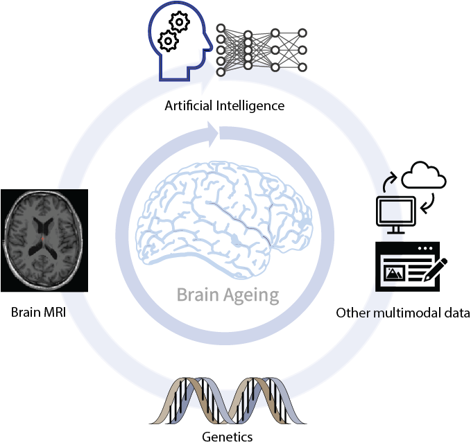

Chao Dong
Research Associate
University of Cambridge
Email: cd888@cam.ac.uk
Phone: 07386802593
A Bit About Me
I am currently a Research Associate at the University of Cambridge, affiliated with Trinity College. My research focuses on dementia diagnosis using machine learning. With a multidisciplinary approach combining biomedical engineering, neuroimaging, neuroscience, and machine learning techniques, my research aims to deepen our understanding of human longevity mechanics, ageing-related diseases, genetic determinants of brain structure, and the identification of reliable brain ageing or dementia biomarkers. My PhD thesis is “Genetic and environmental influences on human brain changes in ageing”. I earned my bachelor’s and master’s degrees in Biomedical Engineering before obtaining my PhD in Psychiatry from the University of New South Wales (UNSW) in 2024, supported by the prestigious Scientia PhD Scholarship. During my time at the Centre for Healthy Brain Ageing (CHeBA) at UNSW, I conducted research under the guidance of my supervisors: Wei Wen, Karen A. Mather, Anbupalam Thalamuthu, Perminder S. Sachdev, and Jiyang Jiang.
Research Themes

Work Experiences
- 2024—2025 Research Associate — University of Cambridge.
- 2024—2024 Research Fellow — Monash University.
- 2023—2023 Research Assistant (casual) — University of New South Wales.
- 2019—2019 Research Assistant — Beihang University, Beijing Advanced Innovation Center for Big Data-Based Precision Medicine.
- 2017—2018 Marketing Assistant (part-time) — Johnson & Johnson Company.
List of Projects
AI-guided detection of Alzheimer’s disease based on blood markers and cognition
Exploring to replace β-amyloid PET with blood markers supports reliable detection of AD, providing a more accessible and cost-effective tool for dementia diagnosis using AI model.
7T Laminar MRI preprocessing and functional connectivity analysis
Preprocessing 7T laminar task-based fMRI data using SPM 12. Analyse network-based functional connectivity.
Hippocampus-centred brain age prediction using deep learning
Using brain hippocampus local structure to train deep learning convolutional neural networks (CNN) models. Brain age gap was analysed with cognition, Apolipoprotein E (APOE) genotype, and lifestyle risk factors in both cross-sectional and longitudinal settings.
Brain structural covariances and genetic architecture of brain imbalance mapping
Investigating brain structural covariances in ageing by using UK Biobank dataset (>40,000). Genome-wide association studies (GWAS) were performed to explore brain imbalance genetic architecture. Investigating associations between brain imbalance mapping, cognition, and hand grip strength.
Associations between human longevity, genetics, and brain MRI metrics
Using UK Biobanks cohort, Sydney Memory and Ageing Study (MAS) cohort, and Older Australian Twins Study (OATS) to explore the associations between polygenic risk score (PRS) for longevity and structural MRI brain metrics (including grey matter volume and white matter hyperintensities).
Neuroimaging of healthy ageing and subjective cognitive decline by rs-fMRI
Using resting-state functional MRI (rs-fMRI) data to explore brain functional connectivity in older people and differences between healthy and unhealthy elderly in Sydney Memory and Ageing Study.
Publications
- Dong, C., Mather, K., Brodaty, H., Sachdev, P. S., Trollor, J., Harrison, F., … & Dai, Z. (2025). The Role of Nutrition and Other Lifestyle Patterns in Mortality Risk in Older Adults with Multimorbidity. Nutrients, 17(5), 796. Link
- Dong, C., Pan, Y., Thalamuthu, A., Jiang, J., Du, J., Mather, K. A., ... & Wen, W. (2024). Deep learning-derived age of hippocampus-centred regions is influenced by APOE genotype and modifiable risk factors. medRxiv, 2024-10. Link
- Dong, C., Thalamuthu, A., Jiang, J., Mather, K. A., Sachdev, P. S., & Wen, W. (2024). Brain structural covariances in the ageing brain in the UK Biobank. Brain Structure and Function, 229(5), 1165–1177. Link
- Dong, C., & Hayashi, S. (2024). Deep learning applications in vascular dementia using neuroimaging. Current Opinion in Psychiatry, 37(2), 101–106. Link
- Dong, C., Thalamuthu, A., Jiang, J., Mather, K. A., Brodaty, H., Sachdev, P. S., & Wen, W. (2022). Parental life span and polygenic risk score of longevity are associated with white matter hyperintensities. The Journals of Gerontology: Series A, 77(4), 689–696. Link
- Liu, H., Liu, T., Jiang, J., Cheng, J., Liu, Y., Li, D., ... & Wen, W. (2020). Differential longitudinal changes in structural complexity and volumetric measures in community-dwelling older individuals. Neurobiology of Aging, 91, 26–35. Link
- Li, Q., Dong, C., Liu, T., Chen, X., Perry, A., Jiang, J., ... & Wen, W. (2020). Longitudinal changes in whole-brain functional connectivity strength patterns and the relationship with the global cognitive decline in older adults. Frontiers in Aging Neuroscience, 12, 71. Link
- Dong, C., Liu, T., Wen, W., Kochan, N. A., Jiang, J., Li, Q., ... & Sachdev, P. S. (2018). Altered functional connectivity strength in informant-reported subjective cognitive decline: a resting-state functional magnetic resonance imaging study. Alzheimer's & Dementia: Diagnosis, Assessment & Disease Monitoring, 10, 688–697. Link
See my Google Scholar.
Conference Presentations
- Dong, C., … Kourtzi, Z. AI-guided tool for early dementia prediction based on blood marker and cognitive data outperforms PET biomarker-based predictions. Dementias Platform UK, 2025. Talk & Poster
- Dong, C., Thalamuthu, A., Jiang, J., Mather, K. A., Brodaty, H., Sachdev, P. S., Wen, W. Brain anatomical imbalance mappings: associations with cognitive abilities, hand grip strength, and sequence variants. 2023 Annual Meeting of the Organization for Human Brain Mapping (OHBM), Montréal, Canada, July 22–26, 2023. Poster No: 2238.
- Dong, C., Pan, Y., Thalamuthu, A., Jiang, J., Mather, K. A., Sachdev, P. S., Wen, W. The 1st Australian UK Biobank Research Symposium, Brisbane, Australia, February 7–8, 2024.
- Dong, C., Pan, Y., Thalamuthu, A., Jiang, J., Mather, K. A., Brodaty, H., Sachdev, P. S., Wen, W. The brain age of hippocampus-centred regions and associations with APOE genotype. The 30th Organization for Human Brain Mapping (OHBM) Annual Meeting, Seoul, Korea.
Awards
- Scientia PhD Scholarship – Australia’s Premier Research Award
The Scientia PhD Scholarship is the most prestigious and competitive scholarship at the University of New South Wales (UNSW), Australia. It is designed to attract the brightest and most talented researchers from around the world, providing them with the resources and opportunities to excel in their chosen fields. This scholarship embodies excellence, leadership, and impact, making it the top PhD scholarship in Australia.
Membership
- Member of the Organization for Human Brain Mapping (OHBM), the primary international organization dedicated to neuroimaging.
- Member of the Medical Image Computing and Computer Assisted Intervention Society (MICCAI), a leading international forum for medical image computing, computer-assisted intervention, and medical robotics.
Skills
- Experienced in data processing using R, Python, and MATLAB.
- Proficient in neuroimaging data, including functional and structural MRI, and software packages such as FSL, FreeSurfer, SPM, and fMRIPrep.
- Skilled in machine learning and deep learning models (e.g., CNNs) using PyTorch.
- Willingness to go the extra mile to ensure project success.
Others
- Outside of research, I enjoy photography and am a big fan of dresses!